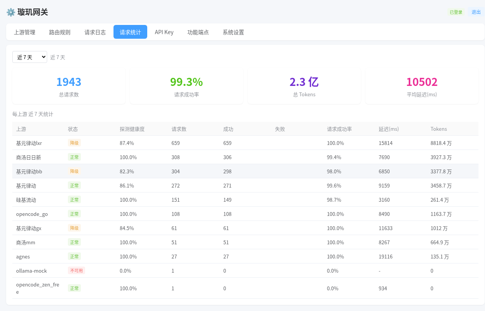
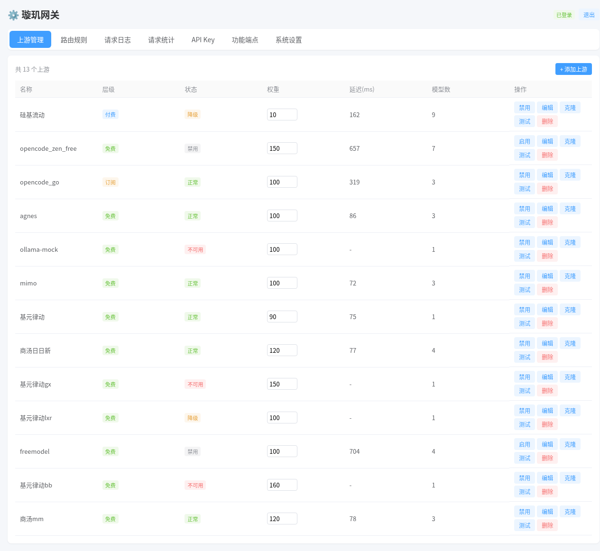
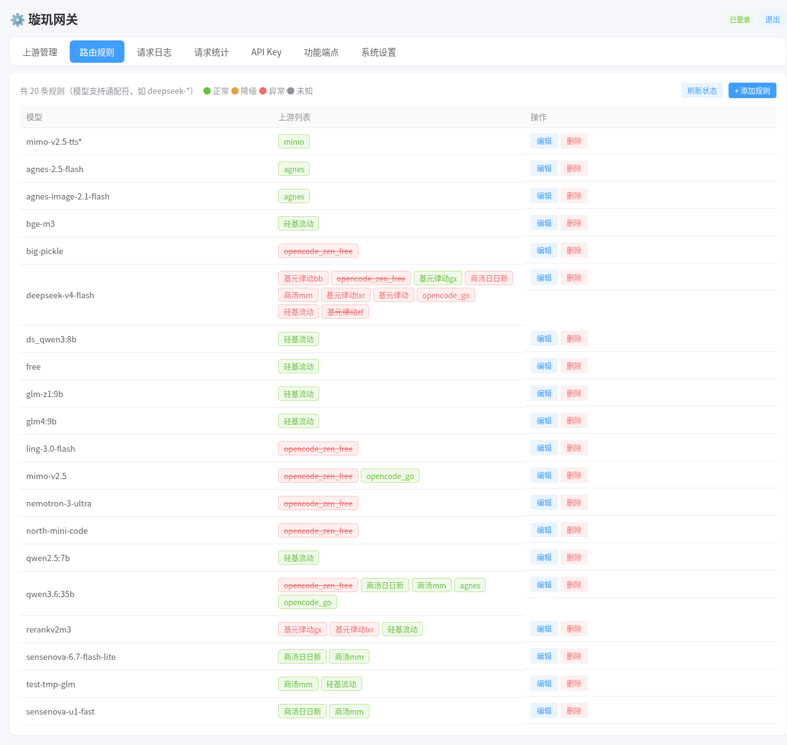
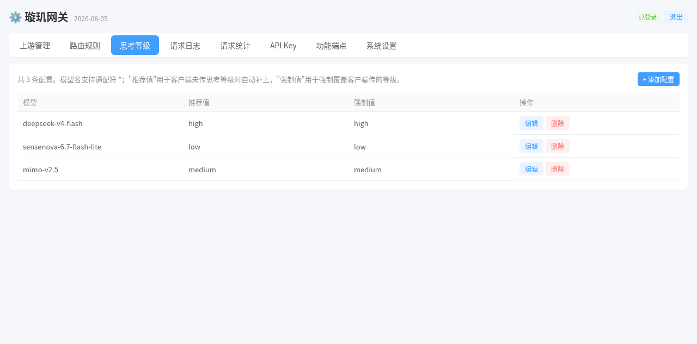
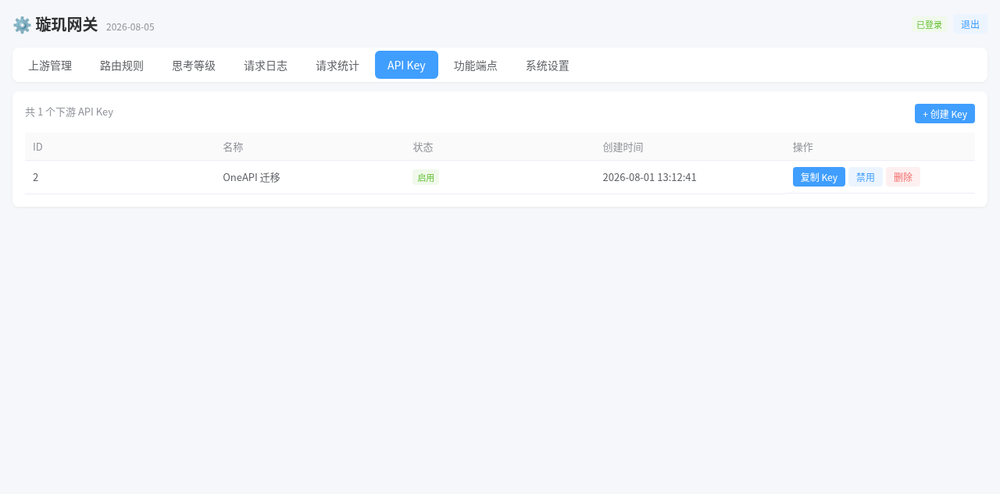
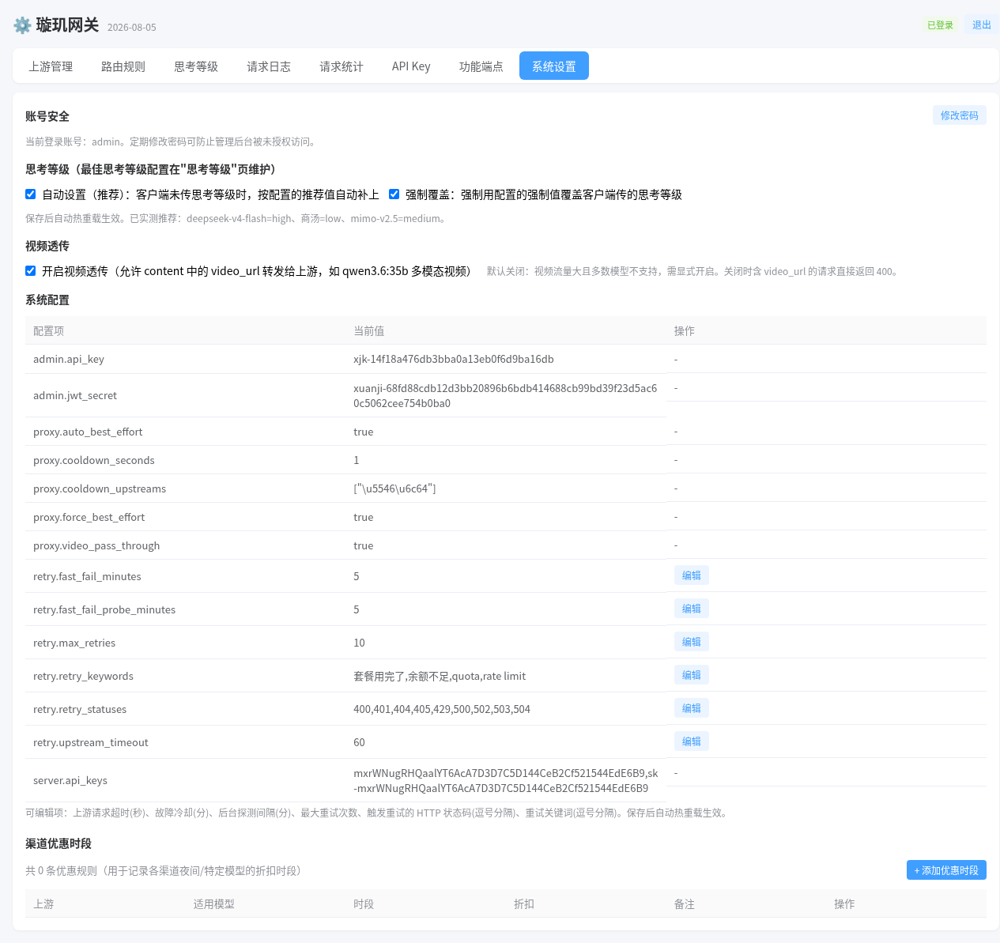

OpenAI / Anthropic 双协议 AI 网关 —— Go 单二进制、零外部依赖。
汇聚多家上游，按计费层级 · 权重 · 优惠时段 · 实时延迟自动分流、故障切换、熔断恢复。
现有一站式网关要么太重（要 MySQL / Redis / Python 运行时），要么对协议兼容不够好（流式、工具调用、多模态字段容易丢）。璇玑追求三件事：轻、准、可控。
Go 单二进制 + 内嵌 SQLite（纯 Go 无 CGO），复制即跑。不需要 MySQL、Redis、Python 或任何外部服务，内存占用极小。
SSE 流式逐行透传不解析，只在协议转换时才解析。工具调用、多模态、思考链字段原样送达，不会被中间层悄悄改写。
所有配置存数据库，管理页 CRUD 即改即热重载。上游、路由、折扣、配额、API Key 全在页面上点，不用改配置文件重启。
一个入口，管住所有模型渠道。
OpenAI 与 Anthropic 协议双原生入口，不是单向转换。Claude Code 直接把 ANTHROPIC_BASE_URL 指向网关即可。
Authorization: Bearer / x-api-key免费额度先榨干，再花包月，最后才动用按量付费。规则内置，无需手工选渠道。
任何一个上游挂掉都不会打断你的工作流。
下游永远只传 OpenAI 标准的 reasoning_effort，网关按目标模型族自动翻译成各家私有参数。
基于 57 题实测数据预置推荐值，不用自己记哪个模型该用哪档。
deepseek-*部分模型在多轮工具调用时要求历史 reasoning_content 原样回传，缺失会报 400 或静默变笨。网关注入修复。
请求日志与统计做到能回答「哪个 Key、哪个上游、哪个模型慢」。
特殊上游不必额外配置，网关自动完成协议转换。
给不同 AI 程序发不同 Key，用量一目了然。
一条固定策略，无需配置：先省钱，再按权重和折扣分流，最后比延迟。同层全挂就升级下一层。
四重比较，逐级决定：
按上游能力选探测端点，统一用占位模型名 + 无凭证请求，不触发真实推理：
OpenAI 用 reasoning_effort、DeepSeek 还要 thinking.type、商汤用 output_config.effort、Kimi / GLM 只有开关、Qwen 是 enable_thinking + 预算……客户端挨个适配太痛苦。璇玑在网关层做归一化。
// 与 OpenAI o 系列完全一致的写法 { "model": "任意模型", "reasoning_effort": "none | low | medium | high", "messages": [...] }
网关按上游真实模型自动翻译成各家私有参数。请求体没有该字段时零开销，原样透传不改 body；未知模型也原样透传，绝不破坏请求。
// 客户端不传 effort {"model":"deepseek-v4-flash", "messages":[...]} // 网关自动注入实测推荐值 {"model":"deepseek-v4-flash", "messages":[...], "reasoning_effort":"high"}
推荐值来自 57 题实测评测（DeepSeek V4 Flash high 得 54/57、商汤 flash-lite low 得 53/57、mimo-v2.5 medium 得 53/57）。开启「强制覆盖」后，所有客户端统一受益。
| 目标模型族 | 关闭思考（none） | 强度控制 |
|---|---|---|
| DeepSeek V4 flash / pro | thinking.type=disabled | 原生 reasoning_effort 透传（pro 的 low 自动抬到 high） |
| 商汤 sensenova-* | thinking.type=disabled | 转 output_config.effort |
| Kimi K3 | 始终思考，映射为 low | 原生 reasoning_effort 透传 |
| Kimi K2.x / GLM-4.5 | thinking.type=disabled | 仅开关，无强度档 → enabled |
| Qwen3 / 3.5 / 3.6 / 3.7 | enable_thinking=false | enable_thinking=true + thinking_budget 分档 |
| MiMo V2.6 flash / pro | 原样透传 | 原生 low/high；xhigh/max 自动降为 high（上游枚举上限） |
| OpenAI o3 / o4 / GPT-5 | 原样透传 | 完全透传 |
Vue 管理页嵌入二进制，无需构建工具、无需额外部署前端。点图可放大。



deepseek-*），每条规则绑定一组上游，网关自动分流、负载、重试
reasoning_effort 推荐值，支持通配符，配合系统设置里的「自动推荐」与「强制覆盖」开关

📖 新手图文教程：《璇玑网关使用说明（小白版，含逐步截图）》
不是要取代谁，而是把「轻量 + 成本优先 + 不中断」这三件事做到位。
| 特性 | 璇玑 Xuanji | OneAPI / New-API | LiteLLM |
|---|---|---|---|
| 形态 | Go 单二进制 | Go 单二进制 | Python 服务 |
| 体积 | 27MB（gzip 13.9MB） | 镜像约 200MB | 镜像 1GB+ |
| 外部依赖 | 零（SQLite 内嵌） | MySQL / Redis | Python 运行时 + 依赖树 |
| 协议入口 | OpenAI + Anthropic 双原生 | 仅 OpenAI 统一入口 | 以 OpenAI 兼容为主 |
| 流式兼容 | 逐行 SSE 透传，不丢字段 | 部分流式字段丢失 | 部分场景字段重写 |
| 延迟路由 | ✅ 实时健康探测 | ❌ | 有限支持 |
| 配置热重载 | ✅ CRUD 即生效 | 部分需重启 | 部分需重启 |
| 客户端断连保护 | ✅ 不误拉黑上游 | ❌ | — |
| 管理界面 | ✅ 内置完整 | ✅ | 较简陋 |
同样是 Go 单二进制，但璇玑不需要 MySQL / Redis，且 Anthropic 是原生入口而非转换层。部署运维成本低一个量级。
LiteLLM 是「Python 库 + 网关」模式，适合在 Python 代码里直接调。璇玑是独立二进制网关，不绑架你的技术栈，也不需要养一个 Python 服务。
CC Switch 是多套配置之间的切换器（桌面端，手动点选）；璇玑是所有配置之上的调度器。用璇玑之后，「切换」这个动作就不需要了 —— 故障自动转移，工作流不中断。
一句话总结：企业级网关是为「管人、管合规」设计的，杀鸡用牛刀；
璇玑是为「自己爽、省钱、不中断」设计的 —— 一两分钟跑起来，不用读三百页文档。
🎯 定位：个人 / 小团队自用。没有计费、用户管理、配额兑换码等运营功能，短期内也不打算加入 —— 它是给你自己的 AI 工作流做统一入口与成本调度的。
首次启动自动建库并写入默认配置，开箱即用。
需要 Go 1.26+。默认监听 8787 端口，数据库默认落在当前目录。
# 编译 go build -o xuanji-server ./cmd/server # 启动（首次启动自动建库 + 写入默认配置） ./xuanji-server --port 8787 --db ./xuanji.db
浏览器打开 http://<你的主机>:8787/，默认账号 admin / xuanji123 —— 请第一时间修改密码。
在「上游管理」填入名称 / Base URL / API Key / 计费层级 / 权重 / 模型映射。支持一键拉取该上游的模型列表。
在「路由规则」把模型名（支持 deepseek-* 通配符）映射到一组上游。网关会自动分流、负载与故障切换。
用「API Key」页创建下游 Key，然后把客户端指向网关地址。以 Claude Code 为例：
export ANTHROPIC_BASE_URL="http://<你的主机>:8787" export ANTHROPIC_API_KEY="sk-你在网关创建的key" # OpenAI 兼容客户端同理 export OPENAI_BASE_URL="http://<你的主机>:8787/v1" export OPENAI_API_KEY="sk-你在网关创建的key"
# 方式一：docker compose（推荐） docker compose up -d --build # 方式二：docker run docker build -t xuanji . docker run -d --name xuanji \ -p 8787:8787 \ -v $(pwd)/data:/data \ --restart unless-stopped \ xuanji
镜像基于多阶段构建：golang:1.26-alpine 编译 + 精简 alpine 运行，静态编译，已内置东八区时区与 CA 证书。数据库存 /data/xuanji.db，卷映射后升级容器不丢配置。
# /etc/supervisor/conf.d/xuanji.conf
[program:xuanji]
command=/opt/xuanji/xuanji-server --port 8787 --db /opt/xuanji/xuanji.db
directory=/opt/xuanji
stopasgroup=true
autorestart=true
user=root
端口与数据库路径由命令行参数控制，改端口请改 supervisor 配置而不是配置文件。
| 协议 | 端点 | 说明 |
|---|---|---|
| OpenAI | POST /v1/chat/completions | 聊天补全（流式 / 非流式） |
POST /v1/completions | 文本补全 | |
POST /v1/embeddings | 文本嵌入 | |
POST /v1/images/generations | 图片生成 | |
POST /v1/rerank | 重排 | |
POST /v1/audio/speech · /v1/audio/transcriptions | 语音合成 / 语音识别 | |
GET /v1/models | 模型列表 | |
| Anthropic | POST /v1/messages | Claude 消息（流式事件转换） |
| 视频 | POST /v1/videos · GET /v1/videos | 视频生成透传 / 任务状态 |
| 运维 | GET /healthz | 健康探针 |
鉴权双风格：Authorization: Bearer <key> 与 x-api-key: <key> 均可，兼容各类 SDK。
覆盖协议转换、路由选择、熔断、思考归一化与最佳等级注入。
go build ./... go test ./...
net/http，无 Web 框架go:embed 嵌入全部配置存 SQLite，无需 YAML 文件；表结构升级在代码里做，旧库自动 ALTER 加列。